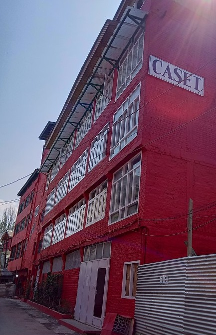
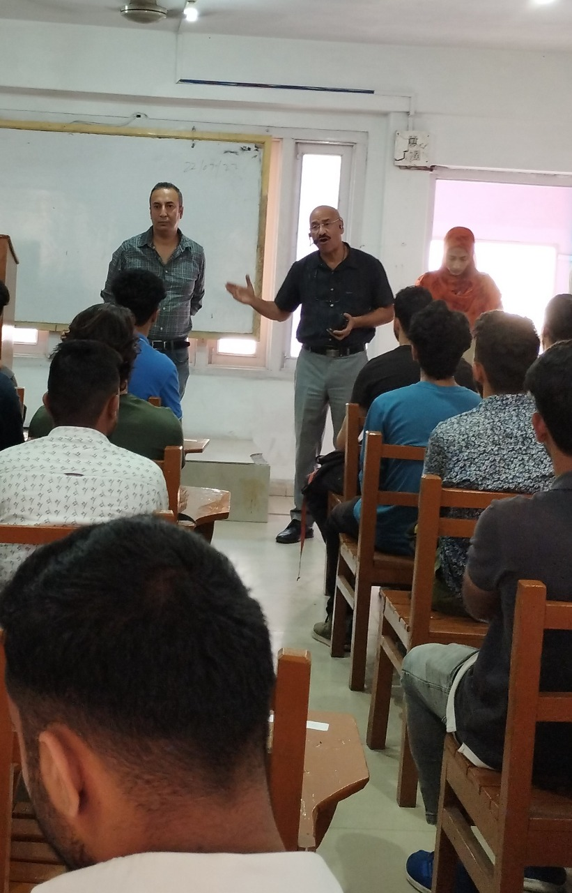

Our Campus
Gole Market Karan Nagar, Srinagar, India, 190010

CAMPUS BUILDING

COMPUTER LAB

AFFILIATED TO KASHMIR UNIVERSITY FOR BCA AND PGDCA
AFFILIATED TO NIELIT FOR B LEVEL MCA
COURSES OFFERED IN CASET COLLEGE OF COMPUTER SCIENCE
The BCA course is a full time four years (eight semesters) Bachelor's Degree in Computer Application. The basic objective of BCA Course is to provide young men and women with the required knowledge and necessary skills to get rewarding careers into the changing world of Information Technology.
Post Graduate Diploma in Computer Applications (PGDCA) is a one year long professional post-graduate programme for candidates wanting to delve deeper into the world of computer application development. This programme is designed to provide higher level education in Information Technologies.
MCA is a three year (6 semester) course. The students entering MCA must have a B.C.A./B.Sc./ B.Com/B.A. degree with Mathematics as one of the subjects at 10+2 level or at graduation. Of the 6 semesters one semester is to be spent in an industry developing a software system.
Gole Market Karan Nagar, Srinagar, India, 190010
CASET was started in the year 1974 by Prof. C. L. Vishen as a lab school for his research work in the area of education and school management. The school soon achieved
fame as a premier school among the people of the valley. Since then CASET has grown in many directions opening a number of educational facilities for the students of the valley.